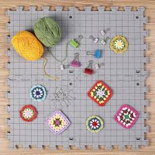
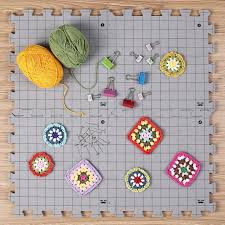
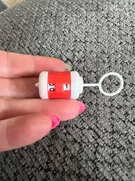
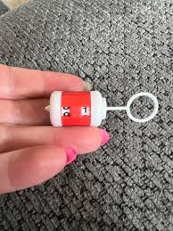
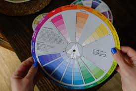
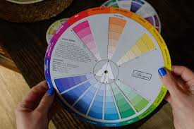

Materials Needed for Harmony Mandala Blanket
Before you begin your mandala project, gather the following materials to ensure a smooth and enjoyable experience.
Yarn by Color
Cream – Rounds 1–5, 56–61 (final trim) – ~200g

Gold – Rounds 6–10 – ~150g

Coral – Rounds 11–15 – ~150g

Aqua – Rounds 16–20 – ~150g

Lavender – Rounds 21–25 – ~150g

Mint – Rounds 26–30 – ~150g

Rose – Rounds 31–36 – ~150g

Teal – Rounds 37–42 – ~150g

Plum – Rounds 43–45 – ~100g

Soft Rose – Rounds 46–50 – ~150g

White – Rounds 51–55 – ~150g

Project Timeline
Beginner–Intermediate: 60–80 hours
Advanced: 40–60 hours
Rounds per session: 3–5 rounds recommended
Crochet Hooks & Tools
Crochet hook – Size 4–5 mm (G-H)

Yarn needle / tapestry needle for weaving ends

Scissors

Stitch markers

Optional Tools & Accessories
Blocking mats & pins for flattening mandala layers


Measuring tape or ruler

Row counter / notebook to keep track of rounds


Color palette board or swatches to plan color transitions


Small zip bags for yarn organization
Tips
Use smooth, worsted-weight yarn for best stitch definition.
Maintain consistent tension to avoid curling or uneven rounds.
Organize your yarn by color before starting for a smooth workflow.
Optional: Keep small zip bags for each color to prevent tangling.